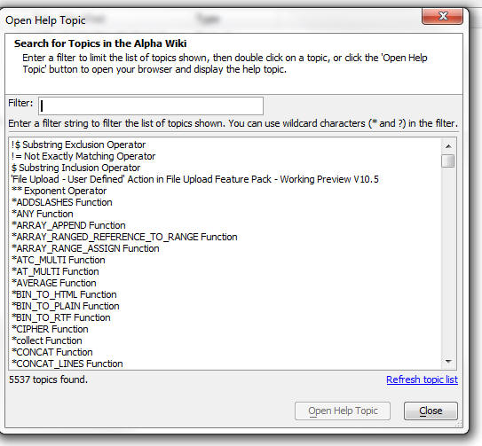
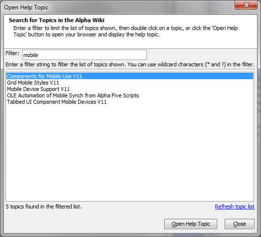

Wiki Search Assistant
Flash player not available.
A new option is available under the Help menu:

The Wiki Search Assistant opens a dialog showing a list of topics in the wiki. You can search very quickly in this list and then open the selected topic in your browser.

